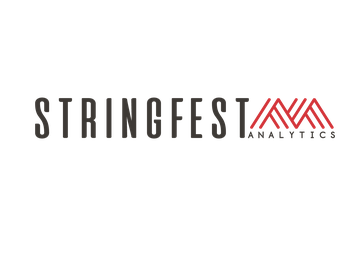

Support Jazz Watch
Enjoy the music.
Spread the word.
If Jazz Watch has helped you find a good set, a thoughtful introduction is a simple way to help it along.
Know someone who uses Excel at work?
Introduce them to my work at Stringfest Analytics. Sharing something useful with a colleague or training organizer helps support projects like this one. Jazz Watch is free to use.
The person behind the calendar
Hi, I’m George Mount.
I’m based in Cleveland, where I run Stringfest Analytics. I help people who work in Excel build more reliable reports, understand their data, and put newer tools to practical use.
My workshops and training programs help finance, accounting, operations, and analyst teams with:
- Excel and Power Query: making repetitive data preparation easier to repeat and maintain.
- Copilot and AI: finding useful ways to work faster while checking the results.
- Python in Excel: extending familiar spreadsheets into richer analysis.
O’Reilly author · Microsoft MVP · LinkedIn Learning instructor

And share the music, too.
Send a friend Jazz Watch, or use “Share set” beside a concert to invite them to listen. The Classical Watch calendar has free conservatory concerts, too.
Support the people on stage.
A venue’s optional donation, a musician’s recording, or a future in-person ticket can help keep the music going. No purchase is needed to use this calendar or watch the listed free streams.
Thanks for being here.
George